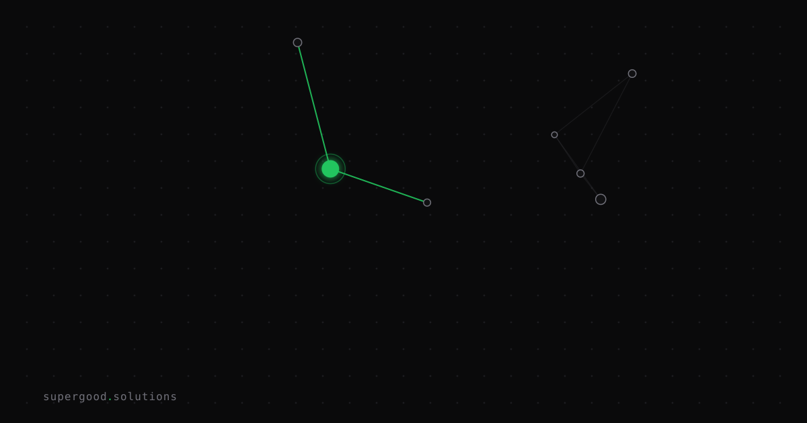

AI Vendor Lock-in Is the New Cloud Lock-in — and Harder to Escape
TL;DR: The infrastructure bets enterprises are making right now — which LLM, which agent platform, which fine-tuned checkpoint — are accumulating switching costs faster than any cloud migration did. The difference is that S3 buckets are boring and portable; model weights, prompt formats, and evaluation datasets are not.
Key Insight
Everyone remembers the "don't get locked into AWS" warnings from 2012. Most teams ignored them, and most teams survived. They drew the lesson that lock-in is overstated. Don't repeat that mistake with AI.
Cloud lock-in was mostly infrastructure lock-in — proprietary services, egress fees, region constraints. Painful to escape, but fundamentally a logistics problem. You could write a migration script, hire a consultant, spend a quarter on it.
AI lock-in is cognitive lock-in. What accumulates here is organizational knowledge, not configuration files: prompt libraries tuned to a specific model's quirks, fine-tuned weights that only run on one provider's infrastructure, evaluation golden sets whose pass/fail thresholds were calibrated against outputs from a model you might need to replace. When you swap models, all of that expertise goes sideways at once.
This is why AI Snake Oil authors Arvind Narayanan and Sayash Kapoor have consistently warned that benchmark performance does not transfer between model versions. A team that spent six months building eval harnesses against GPT-4o finds that upgrading to a newer model shifts the distribution enough that a third of their evals need recalibration. The work doesn't move. It has to be redone.
Why Teams Miss This
Three failure modes, in order of how quietly they kill you:
1. Prompt format coupling. OpenAI's function-calling spec is the de facto standard, but it's not universal. Anthropic's tool use format differs in structure. Google Vertex AI wraps responses differently. For teams that hard-code against one provider's output shape, switching means surgery on every parser downstream, not a simple config change.
2. Fine-tune gravity. A fine-tuned checkpoint is tied to a base model, a training recipe, a token format, and a serving infrastructure, not a file you move. When Azure OpenAI updates its fine-tuning endpoint, or when a provider deprecates a model version, your fine-tuned work doesn't port. You retrain.
3. Eval dataset drift. The most invisible lock-in. Your golden test set was built by sampling real outputs from Model X and labeling them. When you move to Model Y, a non-trivial fraction of your passing cases fail because Model Y is different, not worse, in ways your eval can't handle. Teams without independent behavioral evals (testing what the model does, not how it phrases it) can't distinguish a regression from a dialect change.
How to Actually Do It
Most enterprises can't avoid proprietary models entirely. The mitigation is building the abstraction layer early, before it's painful.
Use a routing proxy from day one. LiteLLM exposes a single OpenAI-compatible interface in front of 100+ providers. You configure model routing centrally; application code never sees a provider name. Switching Claude for GPT-5 for a specific use case is a config change, not a code change.
from litellm import completion
response = completion(
model="anthropic/claude-sonnet-5", # swap this without touching the rest
messages=[{"role": "user", "content": prompt}]
)Write behavioral evals, not model-output evals. The test is "did the agent book the right flight?" not "did the agent respond with {"action": "book", ...}." Output-format assertions couple you to a model's current response shape. Behavioral assertions couple you to the outcome, which is what you actually care about.
Treat fine-tuned checkpoints as liabilities, not assets. Before committing to fine-tuning, ask: can this be done with a well-structured system prompt and retrieval? If yes, don't fine-tune. The capability gap between a prompted frontier model and a fine-tuned smaller model is shrinking every quarter. The portability gap is not.
Date-stamp your golden sets. Every eval dataset should record which model version it was calibrated against. When you run evals post-migration, you know whether failures are regressions or calibration drift. Most teams skip this; six months later they can't tell the difference.
What We've Learned
The most expensive AI migrations we've seen had one thing in common: the team treated the LLM provider like a database engine (something you choose once and then abstract away). It's not. The model's behavior leaks up through every layer: prompt format, output parsing, error handling, eval thresholds. The abstraction has to be intentional, not assumed.
Start with a routing proxy. Write behavioral evals on day one. Treat fine-tuning as a last resort. The switching cost you avoid is the migration and the six months of re-calibration you'd otherwise have to redo.
Sources
- LiteLLM — Open Source AI Gateway for 100+ LLMs
- AI Snake Oil — Arvind Narayanan and Sayash Kapoor
- OpenAI Function Calling Documentation
- Anthropic Tool Use Documentation
- AWS Bedrock Model Deprecation Policy
Have a specific workflow in mind?
Bring it to a Quick Scan — a live working session where we'll tell you honestly whether it should be an agent, a workflow, or left alone, before you spend a dollar building it. You get 3 prioritized recommendations on the call, a one-page summary after, and the $500 credited toward any engagement within 30 days.
Get new posts + practical agent-ops notes
One email when something new goes up. No nurture sequence, no spam — unsubscribe whenever you want.